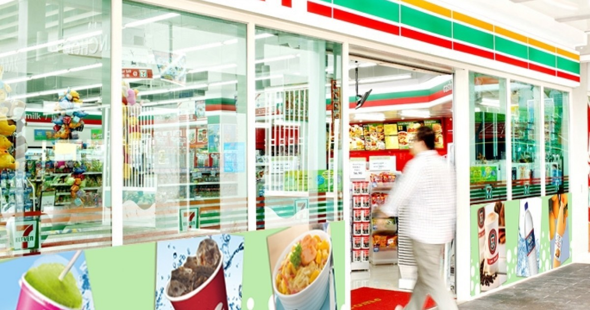
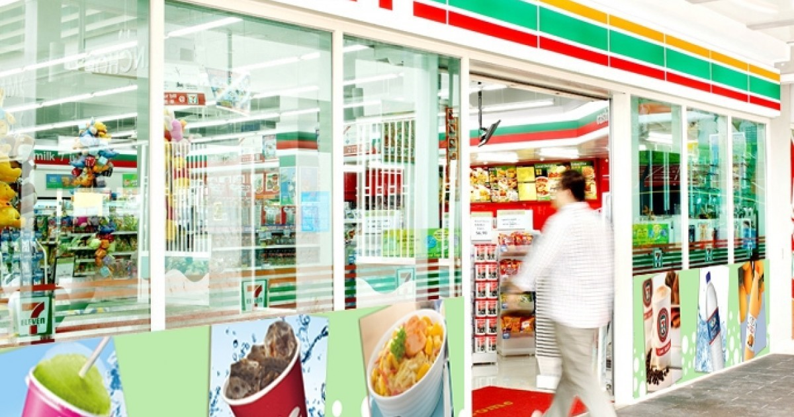
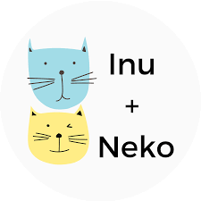

Created a dashboard with PowerBI to help a client compare between summer and winter sales. Transformed and processed client’s data using DAX and Excel to ensure data completeness and validity.
Provided technical insights on top most sold products with high profit margin and also complementary products consumers
often purchase together.
Utilized R studio to perform statistical analysis on a study in which participants were asked to find distinct facts using
different search engines. Visualized effort and frequency of how search engines were used using histograms and box plot. Performed post hoc pairwise comparisons of efforts among levels of search engines using Holm’s sequential Bonferroni
procedure.

Conducted a comprehensive analysis of Inu + Neko marketing campaign's impact using Python. Tracked and measured the success of the campaign using key metrics like number of orders, revenue generated, product preferences, most popular products and numbers of new customers.
Identified key trends in smart device usage through comprehensive data analysis with Tableau. Analyzed frequency, duration of device usage, calories burnt and sleep patterns to provide insighst into user engagement and retention, allowing Bellabeat to optimize their customer experience.
Performed descriptive analysis on a dataset from a US organization called Yelp, which provides a platform for users
to provide reviews and rate their interactions with varieties of businesses and organizations. Transformed and filtered data using aggregating and filtering functions. Utilized SQL to analyze reviews given by users.
Used Excel to create histograms for clicks and conversions data to determine the data distribution. Performed hypothesis and A/B testing to determine statistical difference between the two ad campaigns. Applied a simple linear regression model to predict ad conversions given a certain number of ad clicks.